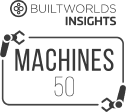

Почему нужно выбрать нас?
В строительной логистике всегда есть возможности для улучшения.
Отмеченное наградами ПО
Всемирно известное программное обеспечение, признанное государственными учреждениями, инновационными группами и техническими организациями
Большой потенциал
Входит в топ-25 самых многообещающих стартапов ConTech по версии Cemex Ventures, Moscow Consulting Group, BuiltWorld и PwC
Выбор лидеров рынка
Рекомендуемый поставщик технологий для 3 из 10 ведущих генеральных подрядчиков в Европе
Устойчивое развитие и безопасность
Способствует снижению выбросов CO2 и повышает безопасность на месте
Волков Матвей

50 лучших инструментов ConTech
25 лучших стартапов ConTech в ЕС
50 лучших стартапов Global ConTech
2018 - 50 лучших стартапов ЕС PropTech